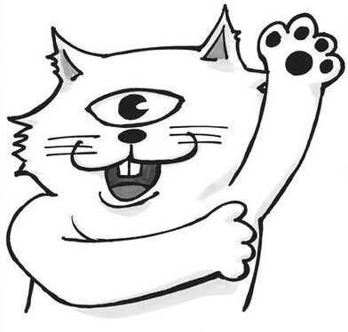

Who is Gege Akutami?
Gege Akutami was born in the Tohoku region of Honshu, Japan, in Iwate Prefecture in 1992. Currently in their early thirties,
Akutami has been a manga artist since 2014, meaning they got their start when they were just 22 years old.
At that time, they were an assistant to Kiss x Death's artist, Yasuhiro Kano, but they published their very own first work, "Kamishiro Sosa"
in Jump NEXT! After publishing a handful of one-shots from 2014-2017, Akutami's Jujutsu Kaisen began serialization in Weekly Shonen Jump.